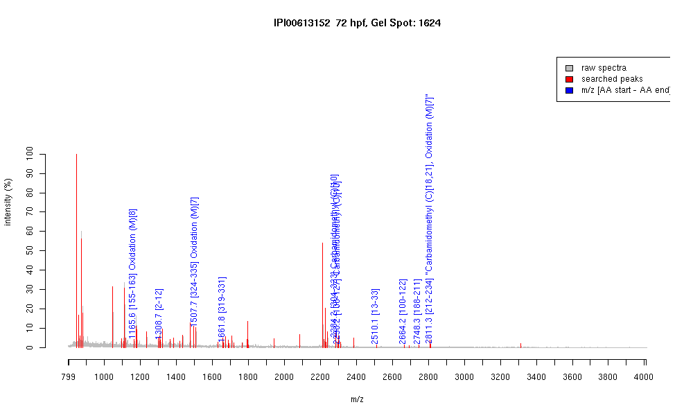

| Name | PREDICTED: similar to gonadotropin inducible ovarian transcription factor 2 |
|---|---|
| MW | 40597.3 |
| PI | 8.94 |
| Mascot Protein Score | 72 |
| Masses (matched / unmatched) | 10 / 55 |

| Peptide | MZ (calc) | MZ (observed) | Error (DA) | Error (PPM) | Start | Stop | Modifications |
|---|---|---|---|---|---|---|---|
| KESFTNHMR | 1165.5419 | 1165.5844 | 0.0425 | 36 | 155 | 163 | Oxidation (M)[8] |
| AFIKEESEDIK | 1308.6682 | 1308.6765 | 0.0083 | 6 | 2 | 12 | |
| QNLIEHMKVHSR | 1507.7798 | 1507.7095 | -0.0703 | -47 | 324 | 335 | Oxidation (M)[7] |
| SFTWKQNLIEHMK | 1661.8468 | 1661.83 | -0.0168 | -10 | 319 | 331 | |
| IHSGVKPHSCPQCGKSFTWK | 2284.1113 | 2284.168 | 0.0567 | 25 | 304 | 323 | Carbamidomethyl (C)[10] |
| IHTGEKPYACQQCGKSFTSR | 2298.0754 | 2298.1802 | 0.1048 | 46 | 108 | 127 | Carbamidomethyl (C)[10] |
| IEETFTVKHEETEELSESNMK | 2510.1602 | 2510.1348 | -0.0254 | -10 | 13 | 33 | |
| QSFTNHMRIHTGEKPYACQQCGK | 2664.2229 | 2664.2485 | 0.0256 | 10 | 100 | 122 | |
| NHMIVHTGAKPHTCHQCGKSFTWK | 2748.3069 | 2748.2881 | -0.0188 | -7 | 188 | 211 | |
| QYLAEHMRIHTGEKPHSCQQCGK | 2811.2871 | 2811.2844 | -0.0027 | -1 | 212 | 234 | "Carbamidomethyl (C)[18,21], Oxidation (M)[7]" |